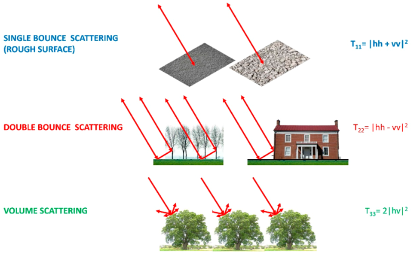
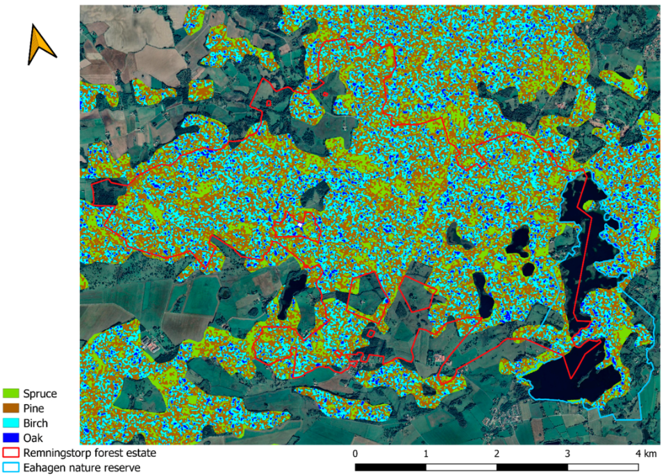

8 Synthetic Aperture Radar (SAR)
8.1 Summary
This week we had a more in-depth look into Synthetic Aperture Radar (SAR).
8.1.1 Key Words:
Backscatter: the proportion of outgoing radar signal that the target surface redirects back to the sensor.
Amplitude: the amount of radar signal that returns to the sensor (backscatter).
Phase: the alignment of the wavelength when it returns to the sensor.
Polarization: the orientation of the plane in which electromagnetic waves are transmitted.
8.1.2 SAR
The way SAR works is the sensor emits an electromagnetic (microwaves) signal towards the earth’s surface and it collects data by recording the amount of signal that is bounced back and the time delay. SAR is an active sensor and it’s main advantage is that it can ‘see through’ clouds, which optical sensors cannot do. It can do this because the wavelength is longer than cloud particles so the signal travelling through is largely unaffected by refraction.
SAR can collect data at different polarizations and as different surfaces respond differently to each polarization it is a useful way to draw out different land cover features.
Rough Scattering is most sensitive to vertical vertical (VV)
Volume Scattering is most sensitive to to cross polarized data such as vertical horizontal (VH) or horizontal vertical (HV)
Double Bounce is most sensitive to horizontal horizontal (HH)

From: [@delgadoblascoEffectsDoubleBounce2020]
8.1.3 Identifying Change
Remotely sensed data can be used to detect changes in the earth’s surface over time. We can do this with SAR data.
It is possible to subtract images to identify differences in pixel values, however this is not best practice for SAR data and is usually done with optical data.
Instead, to detect changes with SAR data, the following can be calculated:
Ratio Images (the original, just involves dividing images)
Improved Ratio
Mean ratio images
Log Ratio Images
Improved Log Ratio Images
To determine which is best we can look at an ROC curve.
If we want to look at identifying changes through image collections we can look at specific published methodologies, fuse imagery to optical data and classify it or use statistical tests such as a t-test.
8.2 Applications
SAR data has many uses, the table below shows the most popular uses of SAR imagery.
| Category | Application |
|---|---|
| Mapping and Land Classification | Land cover classification, oil spills, sea ice, glaciers and forest monitoring |
| Parameter Retrieval | Wind and wave retrieval, soil moisture, ocean topography |
| Object Detection | Object detection and recognition, navigation |
Looking at one of the applications, mapping oil spills, I found a study that used C-band Sentinel- 1A data to detect oil spills in Chennai, on the East Coast of India (dasari2022?). The study used SAR data as it is less expensive than vessel-based and airborne-based detection methods and because of it’s cloud penetrating ability that means it is weather independent. The oil spills were only visible in the VV channel, which was converted from linear to dB value to enhance the contrast oil spill in the image. As mentioned in the lectures, dB scale works best for identifying changes and differences in dark pixels such as water, which I think is demonstrated nicely in this study. A support vector machine and neural networks were used to classify the oil spill, which both had an overall accuracy of around 98% which is very high.
Upon further research, SAR data seems to suit oil spill analysis because the patches of oil show as dark spots in the water and the boundary between these patches and the surrounding water is quite visible in SAR images. This is because the oil film can reduce Bragg waves on the ocean surface (chen2022?). Bragg waves occur when waves (such as radar from the sensor) encounter a periodic structure which means that wavelengths are amplified or weakened depending on their alignment with the periodic structure.
SAR data has also been used to classify forested areas by type and species, as was done in a study in Sweden that used Sentinel- 1 C-Band SAR data (udali2021?). This was done based on previous research that looked into how backscatter interacts with trees leaves, crown structure, branch geometry, and canopy structure. As radar backscatter is also affected by several other factors (eg. temperature or precipitation) a lot of preprocessing of the satellite imagery was done. To control for seasonality, images were split into winter and summer images. This demonstrates just how much has to be taken into consideration with such studies before analysis can even take place. Finally, a Random Forest classifers were used to classify trees by forest type and by species. The model that classified by forest type ended up being the most accurate, this is probably because classification at the leaf level compared to the canopy level is still challenging (Juheon Lee et al. 2016).
